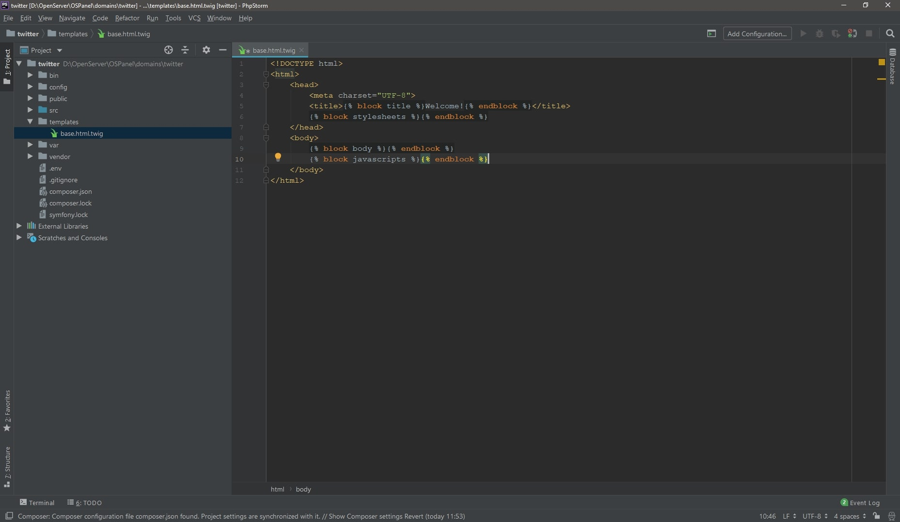
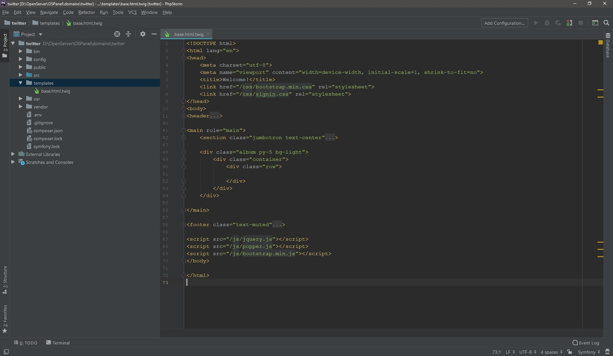
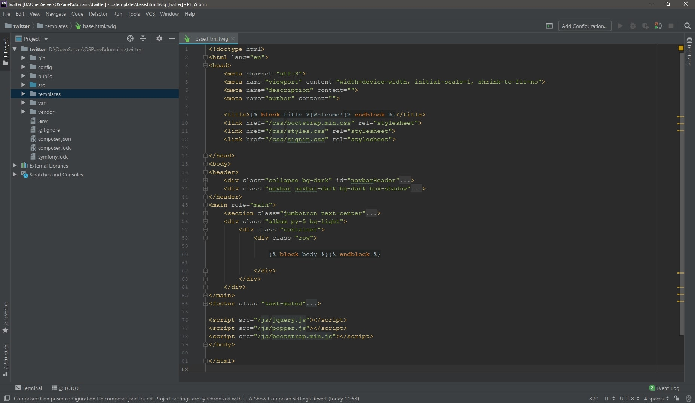
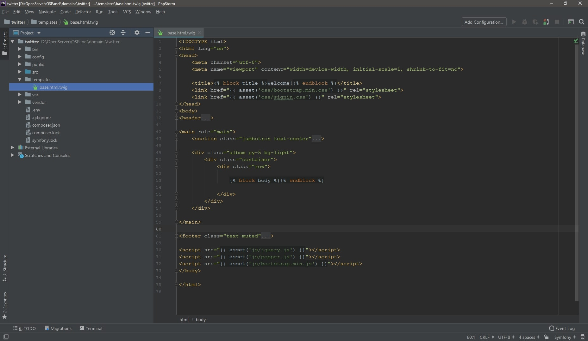
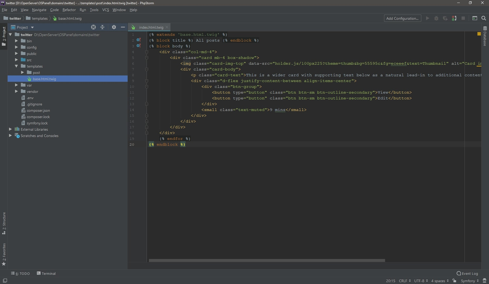
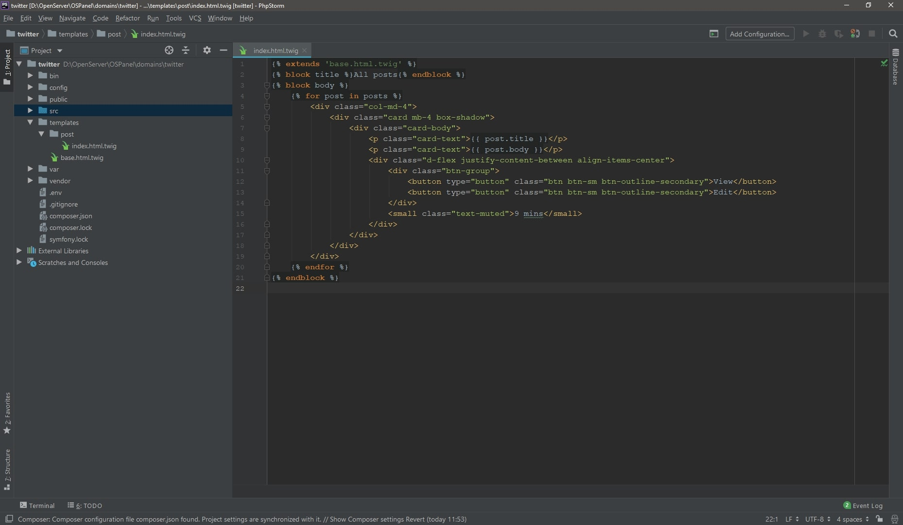
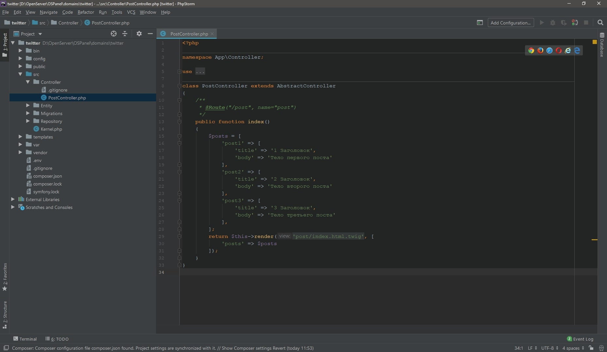
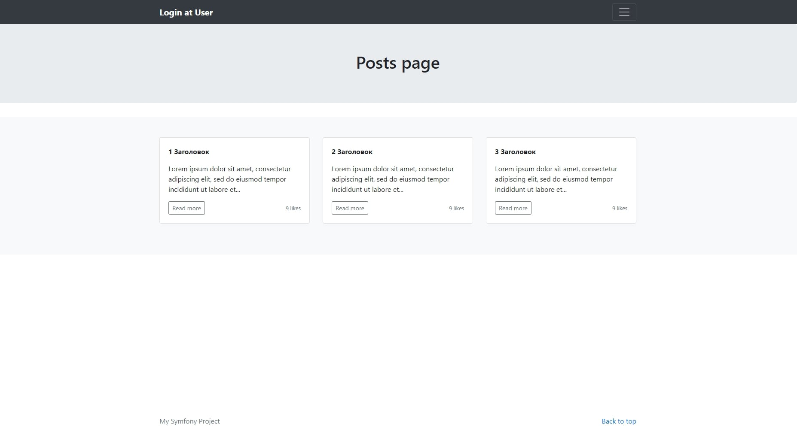

Twig + Symfony
Шаблонизатор Twig
В мире Symfony принято использовать шаблонизатор Twig. Если ранее вы с такими штуками не сталкивались, то возможно хорошо, что twig будет у вас первым. Вещь удобная и лаконичная, конечно же со своими особенностями и синтаксисом, привыкнуть к которым не составит никаких проблем.
Давайте подключим его с помощью composer require template.
После подключения рецепта в структуре фреймворка появилась папка templates, а в ней шаблон
base.html.twig, который будет общим для всех страниц нашего проекта.

Открываем base.html.twig
и видим несколько конструкций вида {% block %}.
Таким образом размечаются блоки, которые в дальнейшем вы сможете переопределять
благодаря наследованию. Именно переопределять!
Создавать новые блоки в дочернем шаблоне запрещено.
{kind=link}
Давайте перенесем общие части сайта - шапку и подвал из архива в базовый шаблон, а также подключим стили и скрипты. Ну и начнем с последнего. Располагаться "расходники" будут в папке public нашего проекта. Просто скопируйте css, js, img из архива в данный каталог.
Теперь верстка. Всего будет 5 страниц, шапка и футер одинаковы для всех.
- - список новостей;
- - создание новости;
- - список пользователей;
- - регистрация;
- - логин.
Сейчас нам нужно оставить только общие части шаблона, удалив все лишнее. Попробуйте сначала сделать все самостоятельно. На текущий момент структура должна иметь следующий вид: 
{kind=link}
Теперь разместим блоки Twig. Нас интересуют title и
body.
Обратите внимание на title, в нем указано "Welcome!".
Данный текст является "заглушкой" и будет отображен, если в дочерних блоках мы не переопределим заголовок.

{kind=link}
Обязательно закрывайте блоки с помощью {% endblock %}.
Стили и скрипты подключим с помощью asset,
разумеется предварительно их установив при помощи
composer require asset.
Далее просто начните вводить имя файла и начнет работать автокомплит плагинов, которые мы ранее установили.

{kind=link}
Отлично, сделано! Но сейчас нам нечего выводить, есть только шапка и футер.
Давайте создадим шаблон для конкретного поста. Для этого создаем папку post в директории templates,
а в post создаем index.html.twig,
обязательно унаследовав его от базового шаблона с помощью
{% extends 'base.html.twig' %}.

{kind=link}
Сырой вариант верстки представляет из себя вырванный из контекста блок "col-md-4" базового шаблона.
Сейчас мы имеем только один статичный пост, который при любых обстоятельствах выведет нам одно и то же.
Давайте это исправим. Нужно создать конструкцию, в которой посты будут выводиться динамически, каждый
со своим текстом и заголовком. Поможет нам в этом цикл for и конструкция
{{ object.value }};

{kind=link}
Давайте повторим. Мы создаем базовый шаблон base.html.twig, в нем шапка и футер.
В index.html.twig мы подключаем его с помощью директивы extends,
переопределяем блок title для конкретной страницы и блок body.
Делаем это с помощью одноименных с базовым шаблоном конструкций
{% block title %}
и {% block body %}. Напомню, что создавая блоки отличные
от родителя - схватите ошибку.
Синтаксические конструкции:
-
{{ variable }} – в двойных фигурных скобках выводится значение переменной. Обращение к объектам производится через точку,
{{ variable.name }}без знака '$'.
К элементам массива – стандартно через{{ variable[name] }}. Если значение с дефисом, то нужно прибегать к конструкции{{ attribute(variable, ‘first-name’) }}. -
{% condition %} – вывод условий, циклов, подключение блоков. Из циклов в twig есть только for, и используется он по аналогии js, т.е. пишете
for post in posts. Если требуется ключ –for key, post in posts. -
{# comment #} – блок комментариев.
Последним шагом осталось протестировать все, что мы сделали. Добавим в метод
index нашего единственного контроллера несколько постов:
$posts = [
'post1' => [
'title' => '1 Заголовок',
'body' => 'Тело первого поста'
],
'post2' => [
'title' => '2 Заголовок',
'body' => 'Тело второго поста'
],
'post3' => [
'title' => '3 Заголовок',
'body' => 'Тело третьего поста'
],
];
Теперь передаем в метод render нашего контроллера шаблон
index.html.twig и
массив с постами. В итоге должно получиться так:

{kind=link}
Запускаем сервер, проверяем.
Подключение фильтра "truncate"
Создаваемые посты могут быть достаточно объемными и лучшей реализацией будет сокращение длины постов в общем списке по 100 символов. Для этого нам потребуются «фильтры» в Twig, своего рода вспомогательные функции.
Установка:
- - подключаем библиотеку
composer require twig/extensions. Здесь, как видно, Symfony Flex уже не используется. -
- регистрируем расширение "text extension" из вышеуказаной библиотеки в сервисах.
Для этого переходим в папку config, открываем services.yaml и добавляем туда следующий код:
services: twig.extension.text: class: Twig_Extensions_Extension_Text tags: - { name: twig.extension } -
- применим фильтр к шаблону
index.html.twig, изменивpost.title,post.bodyнаpost.title | truncate(50, true),post.body | truncate(100, true)соответственно. Для проверки просто изменим массив $posts в контроллере PostController увеличив длинуbodyдо 100+ символов. Проверяем: 
{kind=link}
{kind=link}
Лично у меня каждый раз возникала ошибка после подключения данного расширения.
Решалась проблема с помощью очистки кеша php bin/console cache:clear.